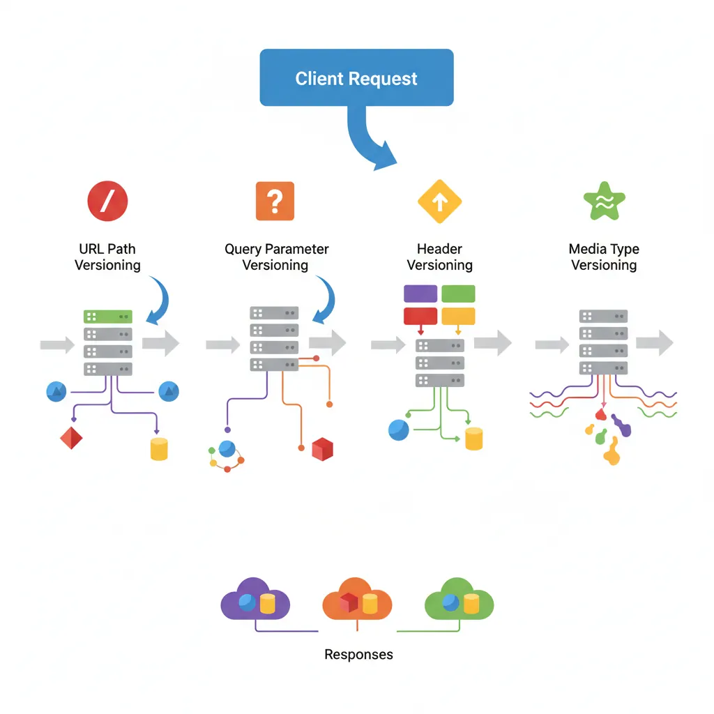
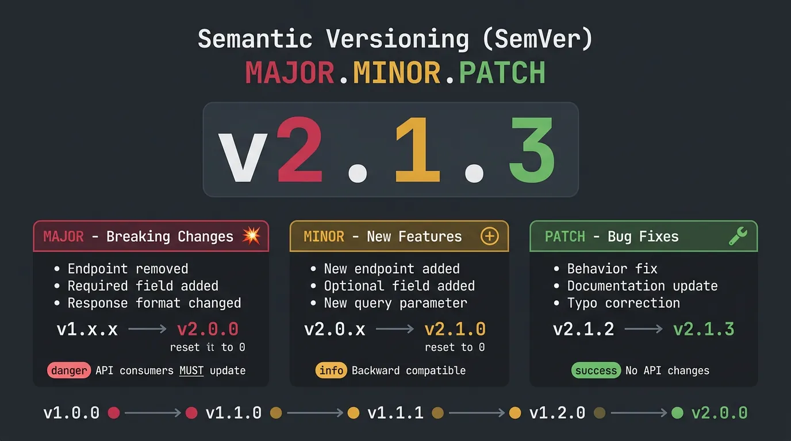
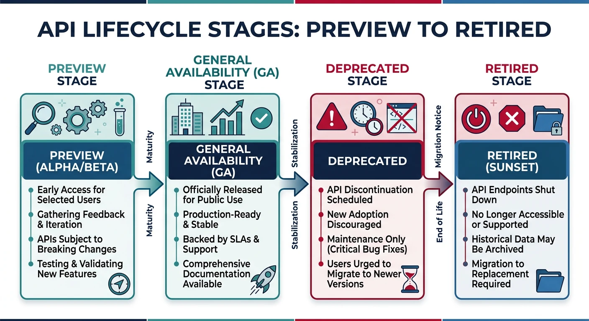
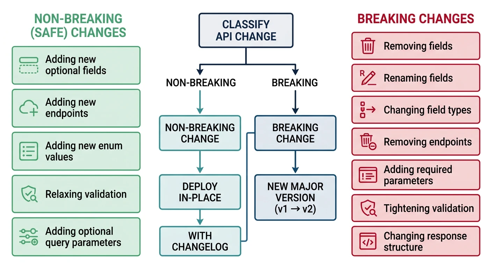

Series Navigation: This is Part 11 of the 17-part API Development Series. Review Part 10: Architecture Patterns first.
API Development Mastery
Your 17-step learning path • Currently on Step 11
Backend API Fundamentals
REST, HTTP, status codes, URI designData Layer & Persistence
Database integration, CRUD, transactions, RedisOpenAPI Specification
Contract-first design, OpenAPI 3.0/3.1Documentation & DX
Swagger UI, Redoc, developer portalsAuthentication & Authorization
OAuth 2.0, JWT, RBAC, ABACSecurity Hardening
OWASP Top 10, input validation, CORSAWS API Gateway
REST/HTTP APIs, Lambda integration, WAFAzure API Management
Policies, products, developer portalGCP Apigee
API proxies, monetization, analyticsArchitecture Patterns
Gateway, BFF, microservices, DDD11
Versioning & Governance
SemVer, deprecation, lifecycle12
Monitoring & Analytics
Observability, tracing, SLIs/SLOs13
Performance & Rate Limiting
Caching, throttling, load testing14
GraphQL & gRPC
Alternative API styles, Protocol Buffers15
Testing & Contracts
Contract testing, Pact, Postman/Newman16
CI/CD & Automation
Spectral, GitHub Actions, Terraform17
API Product Management
API as Product, monetization, ecosystemsVersioning Strategies
Why Version APIs?
API versioning allows you to evolve your API while maintaining backward compatibility for existing consumers.

Versioning Approaches
| Strategy | Example | Pros | Cons |
|---|---|---|---|
| URL Path | /v1/users |
Explicit, cacheable, easy routing | URL pollution, harder to change |
| Query Parameter | /users?version=1 |
Optional, backward compatible | Often overlooked, caching issues |
| Header | Api-Version: 2024-01-01 |
Clean URLs, content negotiation | Hidden, harder to test |
| Media Type | Accept: application/vnd.api.v2+json |
RESTful, fine-grained | Complex, tooling challenges |
// Express.js versioned routing
const express = require('express');
const app = express();
// Version middleware
const versionRouter = (versions) => {
return (req, res, next) => {
// Check header first
let version = req.get('Api-Version');
// Fall back to URL path
if (!version) {
const match = req.path.match(/^\/v(\d+)/);
version = match ? match[1] : null;
}
// Default to latest
version = version || Object.keys(versions).pop();
req.apiVersion = version;
const handler = versions[version];
if (handler) {
return handler(req, res, next);
}
res.status(400).json({ error: `API version ${version} not supported` });
};
};
// Version-specific handlers
const usersV1 = require('./routes/v1/users');
const usersV2 = require('./routes/v2/users');
app.use('/users', versionRouter({
'1': usersV1,
'2': usersV2
}));
app.listen(3000);Semantic Versioning
SemVer for APIs
Semantic Versioning (MAJOR.MINOR.PATCH) communicates change impact to consumers.

SemVer Rules:
- MAJOR (v2.0.0): Breaking changes - endpoint removed, required field added
- MINOR (v1.1.0): New features - new endpoint, optional field added
- PATCH (v1.0.1): Bug fixes - behavior fix, documentation update
# OpenAPI with version info
openapi: 3.1.0
info:
title: Task API
version: 2.3.1
x-api-id: task-api
x-changelog-url: https://api.example.com/changelog
description: |
## Changelog
### v2.3.1 (2024-01-15) - Patch
- Fixed: Task due date timezone handling
### v2.3.0 (2024-01-10) - Minor
- Added: `priority` field to tasks (optional)
- Added: GET /tasks/search endpoint
### v2.0.0 (2024-01-01) - Major
- Breaking: `dueDate` format changed to ISO 8601
- Breaking: Removed deprecated /tasks/list endpointAPI Lifecycle
Lifecycle Stages
API Lifecycle Phases
| Phase | Status | Support Level |
|---|---|---|
| Preview/Beta | x-maturity: preview | May change without notice |
| GA (Generally Available) | x-maturity: stable | Full support, SLA guaranteed |
| Deprecated | deprecated: true | Sunset date announced, migrate |
| Retired | Endpoint removed | No support, returns 410 Gone |
API Lifecycle States
stateDiagram-v2
[*] --> Preview
Preview --> Beta: Stabilize API
Beta --> GA: Production Ready
GA --> Deprecated: Sunset Announced
Deprecated --> Retired: End of Life
Retired --> [*]
Beta --> Preview: Breaking Changes Found

# OpenAPI lifecycle annotations
paths:
/tasks:
get:
summary: List tasks
x-maturity: stable
/tasks/search:
get:
summary: Search tasks
x-maturity: preview
x-preview-notice: |
This endpoint is in preview and may change.
/tasks/list:
get:
summary: List tasks (legacy)
deprecated: true
x-sunset: "2024-06-01"
x-replacement: "/tasks"
description: |
**Deprecated**: Use GET /tasks instead.
This endpoint will be retired on 2024-06-01.Deprecation Strategies
Deprecation Communication
// Deprecation headers middleware
const deprecationMiddleware = (config) => {
return (req, res, next) => {
const endpoint = req.method + ' ' + req.route?.path;
const deprecation = config[endpoint];
if (deprecation) {
// Standard deprecation header (RFC 8594)
res.set('Deprecation', deprecation.date);
res.set('Sunset', deprecation.sunset);
res.set('Link', `<${deprecation.replacement}>; rel="successor-version"`);
// Warning header
res.set('Warning', `299 - "Deprecated: Use ${deprecation.replacement}. Sunset: ${deprecation.sunset}"`);
// Log deprecated endpoint usage
console.warn(`Deprecated endpoint used: ${endpoint} by ${req.get('X-Client-Id') || 'unknown'}`);
}
next();
};
};
// Configure deprecated endpoints
const deprecations = {
'GET /api/v1/tasks/list': {
date: '2024-01-01',
sunset: '2024-06-01',
replacement: '/api/v2/tasks'
}
};
app.use(deprecationMiddleware(deprecations));Breaking Changes
What Constitutes a Breaking Change?
Breaking Changes (Require Major Version):
- Removing or renaming an endpoint
- Removing or renaming a response field
- Adding a required request parameter
- Changing field type (string → number)
- Changing authentication method
- Changing error response format

Non-Breaking Changes
Safe Changes (Minor Version):
- Adding new endpoints
- Adding optional request parameters
- Adding new response fields
- Adding new enum values (if client ignores unknown)
# Spectral rule for breaking changes
rules:
breaking-change-removed-endpoint:
description: Endpoint was removed (breaking change)
severity: error
given: "$.paths"
then:
function: schema
functionOptions:
schema:
additionalProperties: true # Allow new endpoints
breaking-change-required-field:
description: New required field added (breaking change)
severity: error
given: "$.paths.*.*.parameters[?(@.required == true)]"
then:
field: x-since-version
function: truthyEnterprise Governance
API Governance Framework
Governance Checklist
| Area | Requirements |
|---|---|
| Naming Standards | Consistent naming, lowercase, plural nouns |
| Security | OAuth 2.0, HTTPS only, input validation |
| Documentation | OpenAPI spec, examples, changelog |
| Versioning | URL path versioning, 12-month deprecation |
| Error Handling | RFC 7807 Problem Details format |
| Pagination | Cursor-based, consistent parameters |
# .spectral.yaml - Enterprise API linting rules
extends: spectral:oas
rules:
# Naming conventions
path-must-be-lowercase:
description: Paths must be lowercase
severity: error
given: "$.paths"
then:
field: "@key"
function: pattern
functionOptions:
match: "^[a-z0-9/-{}]+$"
# Security requirements
operation-security-defined:
description: All operations must have security defined
severity: error
given: "$.paths.*[get,post,put,patch,delete]"
then:
field: security
function: truthy
# Documentation requirements
operation-description-required:
description: Operations must have descriptions
severity: warn
given: "$.paths.*[get,post,put,patch,delete]"
then:
field: description
function: truthy
# Error format
error-response-format:
description: Error responses must use Problem Details
severity: error
given: "$.paths.*.*.responses[?(@property >= 400)]"
then:
field: content.application/problem+json
function: truthyPractice Exercises
Exercise 1: Version Routing
- Create v1 and v2 of an endpoint
- Implement URL path versioning
- Add header-based version override
Exercise 2: Deprecation Workflow
- Add deprecation headers to legacy endpoint
- Log deprecated endpoint usage
- Create migration guide documentation
Exercise 3: Governance Linting
- Create custom Spectral ruleset
- Add CI pipeline with linting
- Generate compliance report